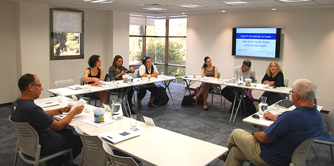

When is the right time to turn an educational or social initiative into an organization? Which framework is more appropriate – a registered non-profit or a public benefit company? How does one know, and who should decide? These questions and more were addressed at a workshop entitled “Formal Organizational Frameworks for Educational-Social Entrepreneurship,” held by the Mandel Graduate Unit in Jerusalem on September 15, 2016. The workshop was led by Adv. Jacob (Yankele) Steinberg, a graduate of Cohort 10 of the Mandel School for Educational Leadership and a consultant specializing in setting up organizations.
Throughout their professional lives, many Mandel graduates must choose formal and legal organizational frameworks with which to realize their vision and expand their circle of influence. The workshop developed with Adv. Steinberg was designed to equip Mandel graduates with the knowledge and tools necessary to make informed decisions at key junctures of their ventures.
Participants in the workshop included 10 enterprising graduates with experience in setting up organizations, as well as graduates who were thinking about how to transform their ideas into concrete activities.
At the start, the workshop reviewed core concepts related to formal frameworks for educational and social activity. These included legal entity, association, non-profit institution, limited company, public benefit company, registered non-profit, contract, business/financial model, and so on.
Next, the participants analyzed the assessment process that must be conducted in order to determine the most suitable framework, and considered the factors that should inform their choices at important junctures in the life cycle of their enterprise: formulating an idea, launch, building foundations, institutionalization, growth, ongoing management, control, transition, separation, crises, and conclusion.
Finally, there was a discussion of the issues of money, interests, control and power, intellectual property, and capital – subjects seen by the participants themselves as “necessary evils.” Adv. Steinberg sought to show that these are an inseparable part of the decision-making process, and should be dealt with in exactly the same way as all other processes involved in realizing the enterprise’s vision.

{kind=link}